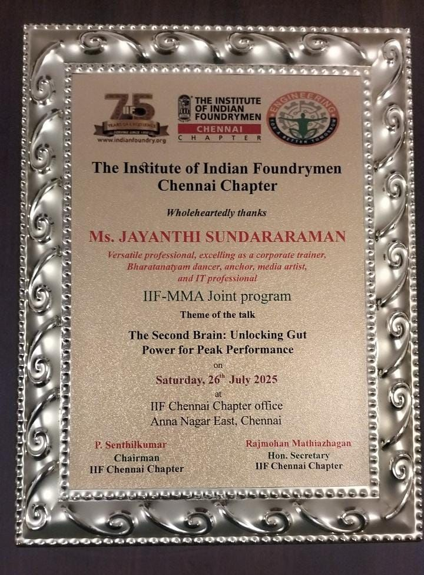
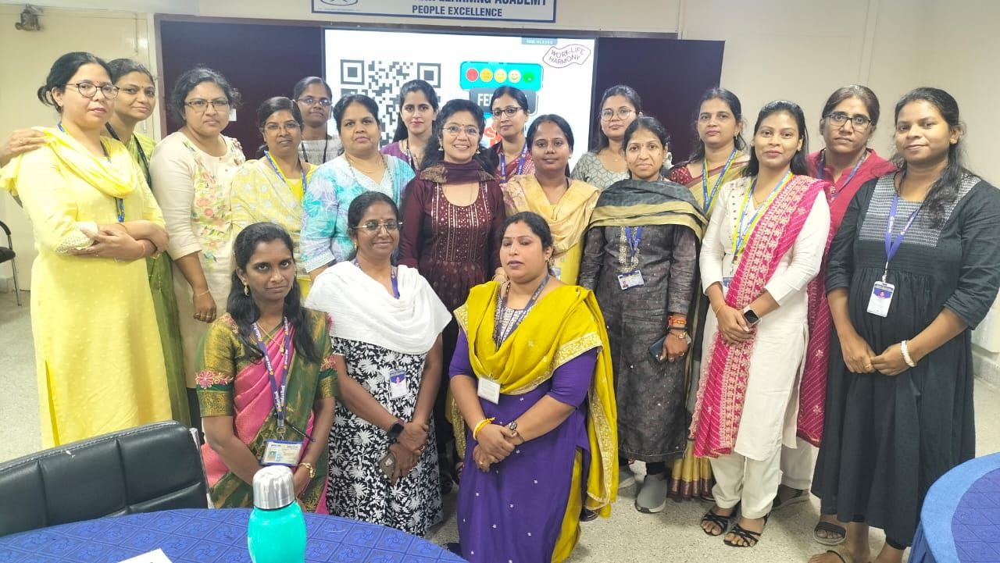
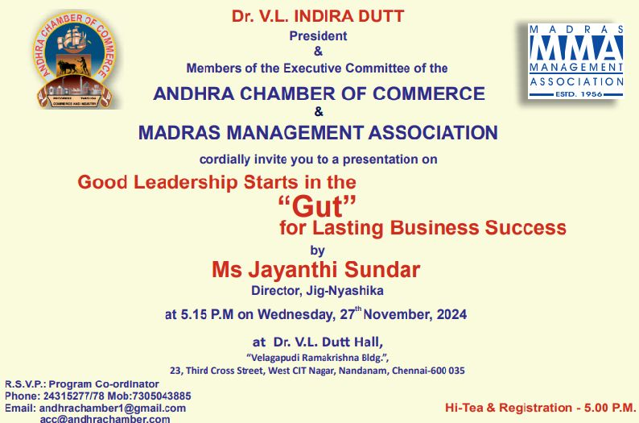
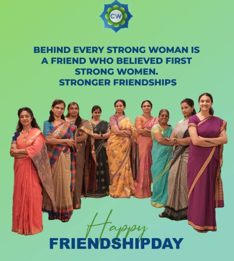

Wellness Coach
Founder & Functional Nutrition Coach — Thrive Gut Academy
Jayanthi Sundar is the Founder of Thrive Gut Academy and a Certified Health Coach. With a deep conviction that "you are not just what you eat... you are what your gut absorbs, digests, and trusts," she combines functional nutrition, personalized gut assessments, and science-backed microbiome testing to guide people toward a pill-free, vibrant life.
Thrive Gut Academy is built on three pillars: personalized gut reconnection through assessments and guidance, collaborative partnerships with hospitals, labs, and wellness brands, and workplace wellness solutions addressing employee burnout and focus.
Services
Corporate Wellness Workshops
Interactive sessions designed for employee well-being, focusing on energy boost, stress reduction, and gut-brain wellness in workplace settings.
Personalized Gut Health Assessments
Individual evaluations providing customized insights that go beyond diet charts — personalized, practical, and rooted in the science of Functional Nutrition.
Gut Health Awareness Programs
Educational presentations, interactive workshops, and campaigns aimed at raising awareness and promoting proactive lifestyle changes.
Speaking: IIF – MMA Joint Program
Invited speaker at a joint initiative by The Institute of Indian Foundrymen (IIF) and the Madras Management Association (MMA), Jayanthi spoke on "The Second Brain: Unlocking Gut Power for Peak Performance" — sharing how gut health influences stress resilience, clarity, and productivity for decision-makers and industry leaders.


Gut Leadership Training — Indian Bank
Jayanthi conducted a 3-hour Gut Leadership training session for Women Managers at Indian Bank, sharing powerful insights on how gut health directly impacts leadership abilities, decision-making, and overall well-being. The session covered mindful nutrition for energy and focus, sustainable fitness routines for busy schedules, the mind-gut connection for better decision-making, and cultivating work-life harmony.

Gut Leadership session for Women Managers, Indian Bank
Gut Leadership — Andhra Chamber of Commerce
Invited speaker at the prestigious Andhra Chamber of Commerce, delivering a session on "GUT Leadership" — exploring the connection between gut health and leadership qualities like clarity, resilience, and decision-making.

Thrive Gut Academy — MSME-Registered (June 2025) | 300+ women supported through the science of gut health and functional nutrition
ChampionWoman
Jayanthi is a proud member of ChampionWoman, a prestigious community where strong women lift each other higher. As a Leading Life Coach, she has inspired 1,000+ women through this platform — empowering them with confidence, career readiness, and the belief that together, women are unstoppable.

With the ChampionWoman tribe